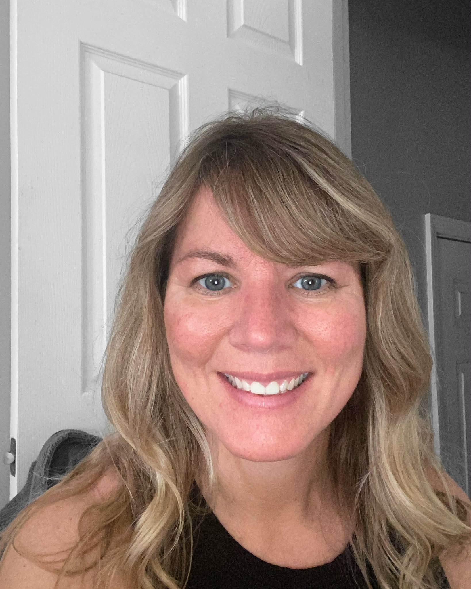

LapeerAngela Basner
Store Manager · Transformational Life CoachAngela brings compassion, practical guidance and a whole-person perspective to every customer conversation.
Read Angela's full bio
Angela Basner is the Store Manager at Rebekah's Health & Nutrition in Lapeer and a certified Transformational Life Coach with a passion for natural wellness. She enjoys helping customers explore personalized options through nutrition, supplements and healthy lifestyle choices.
Angela believes wellness begins within and includes nourishing the mind, body and spirit. She is dedicated to educating, empowering and encouraging others with compassion and practical guidance.
Outside of work, Angela enjoys hiking, kayaking, exploring nature, reading about holistic health, traveling and spending quality time with her family. She is passionate about lifelong learning and inspiring others to live healthier, more balanced and meaningful lives.